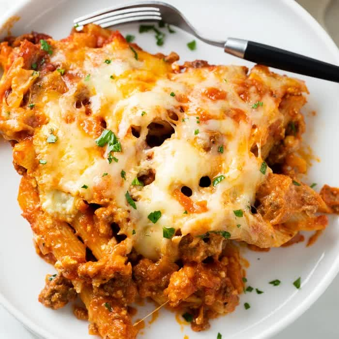

Past Bake

Description
Ursprünglich ist das ein Rezept mit einer Maggie-Fertigmischung. Aber als ich in Norwegen war und mir Dinge zum Kochen überlegen musste und wir immer viel Hackfleisch hatten, habe ich das ganze einfach ohne Maggie-Tüte gemacht und es hat geschmeckt.
Jeremy fand es damals richtig gut und hat gefragt, was das ist. Er hat mir dann gesagt, dass man sowas einen Pasta Bake auf Englisch nennt. Er war außerdem überrascht, dass die Nudeln ungekocht da rein kommen.
Ingredients
- 500 g Hackfleisch
- 1 Dose Tomaten (ggf. 2)
- 200 g Creme Fraiche
- 2 Zwiebeln
- 150 g Käse
- 400 g Nudeln
- 400 ml Wasser
- 1 Gefühl Oregano, Salz, Pfeffer
Steps
- Ofen auf 180°C Umluft vorheizen.
- Hackfleisch scharf anbraten (am besten in einem Topf). Zwiebeln dazugeben und anbraten. Dose Tomaten, Creme Fraiche und Wasser dazugeben und das ganze aufkochen lassen.
- Nudeln in eine Auflaufform geben. Die Soße darüber geben und vermengen. Abschließend mit Käse bestreuen.
- Bei 180°C für 30 min. überbacken.